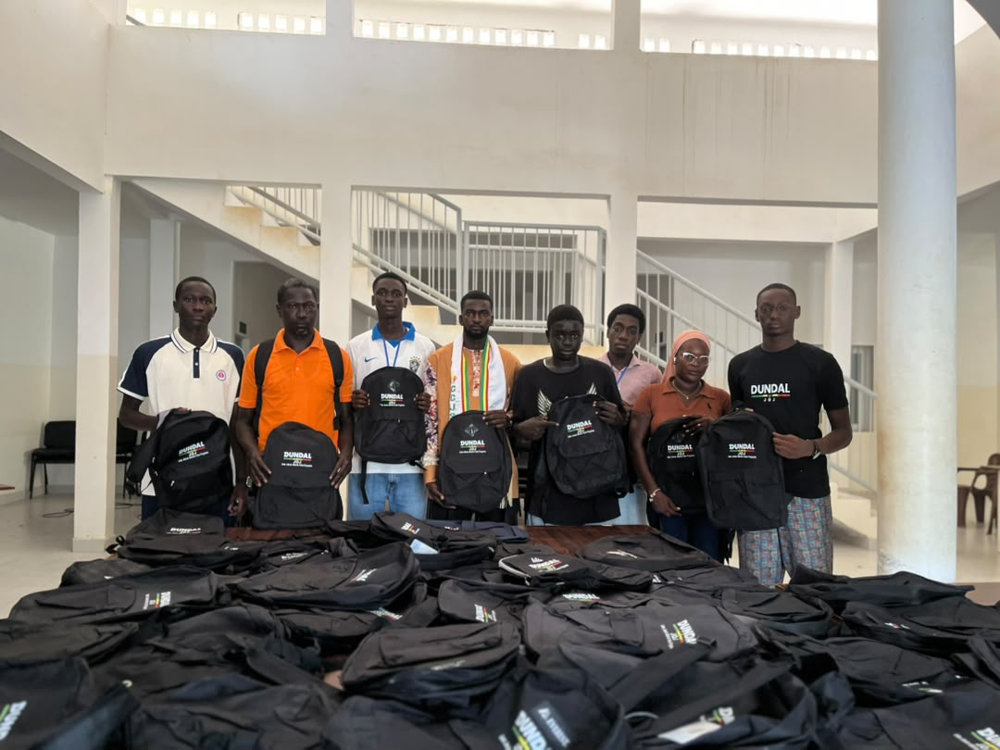
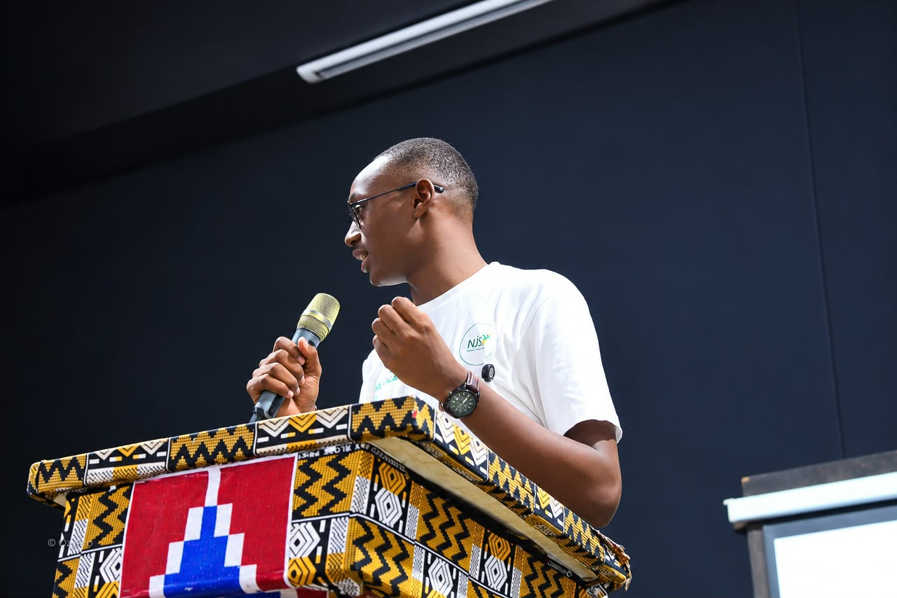
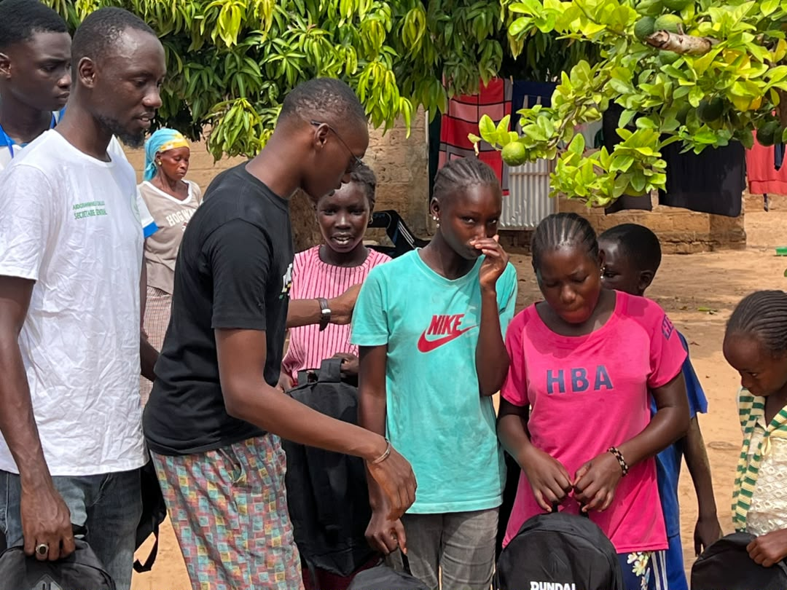
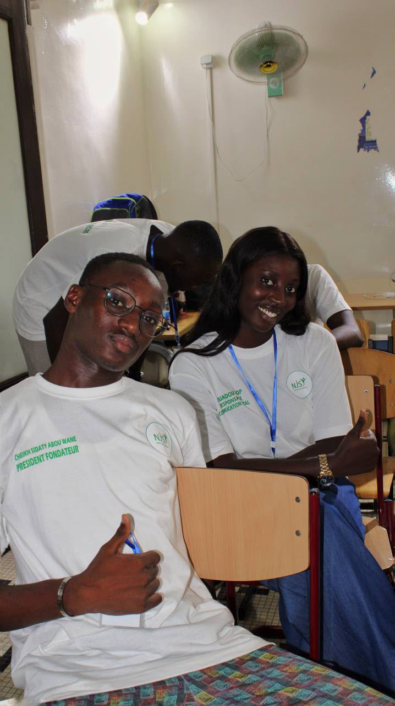
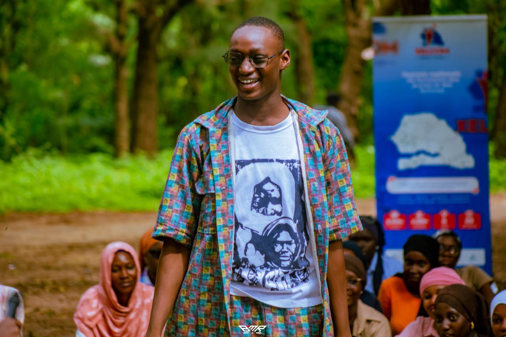

PDG et fondateur
 PARLONS ÉDUCATION
PARLONS ÉDUCATION
Une plateforme de dialogue et de partage
Informer, sensibiliser et réfléchir ensemble aux enjeux éducatifs, en donnant une place aux idées et aux expériences de chacun.
Parlons Éducation est une plateforme dédiée à l'éducation, offrant des ressources, des analyses et des discussions sur les défis et les opportunités dans le domaine de l'enseignement. Nous croyons que l'éducation est la clé du développement personnel et collectif, et nous nous engageons à promouvoir un dialogue constructif sur les meilleures pratiques éducatives.
De l'école à la formation, de la citoyenneté à l'insertion, nous souhaitons rendre les grands enjeux plus accessibles et faire entendre des points de vue variés. La plateforme s'adresse aux jeunes, aux familles, aux éducateurs, aux associations et à toutes les personnes qui souhaitent contribuer à la réflexion.
PDG et fondateur
Des repères pour mieux explorer les questions qui façonnent les parcours éducatifs.
Un espace pour confronter les idées et partager des expériences dans un esprit constructif.
La possibilité pour les jeunes de faire entendre leurs préoccupations et leurs propositions.
Parlons Éducation s'engage à informer, sensibiliser et favoriser le débat sur les enjeux éducatifs. Nous souhaitons contribuer à l'amélioration de la qualité de l'enseignement et à la promotion d'approches innovantes dans le domaine de l'éducation.
Mettre en lumière les enjeux de l'éducation, de l'enseignement et de la formation avec des contenus clairs et accessibles.
Encourager la réflexion sur la jeunesse, la citoyenneté, la santé, la culture et l'insertion professionnelle.
Créer un dialogue entre les jeunes et les personnes ou organisations qui agissent dans le domaine éducatif.
Les contenus sont organisés autour de six grandes catégories pour aider chacun à trouver les sujets qui l'intéressent et à explorer leurs liens avec la vie quotidienne.
Apprentissages, vie scolaire, pratiques pédagogiques et défis de l'enseignement.
Compétences, parcours de formation et passerelles vers les métiers.
Engagement, participation, droits et place des jeunes dans la société.
Information, bien-être et prévention autour des enjeux qui concernent les jeunes.
Initiatives, projets, compétences et chemins vers l'activité professionnelle.
Expression, créativité, confiance en soi et découverte de nouveaux horizons.
Découvrez en images des rencontres, des activités et des moments de partage autour de l'éducation. Chaque photo raconte une initiative, un échange ou un engagement.











Explorez des sujets qui traversent les parcours éducatifs : orientation, actualité et nouvelles approches de l'apprentissage. Ces rubriques ont vocation à ouvrir des pistes de réflexion et à mettre les enjeux en perspective.
Mieux comprendre les choix d'études et de formation, identifier les compétences à développer et réfléchir aux différentes possibilités de parcours.
Des questions, des évolutions et des débats qui influencent l'école, l'enseignement et la place de l'éducation dans la société.
Des idées et des méthodes qui invitent à repenser l'enseignement, l'apprentissage et la transmission des savoirs.
Jeunes du Sénégal, partagez vos témoignages, vos préoccupations, vos propositions ou vos expériences. Votre contribution sera lue par l'équipe de Parlons Éducation et ne sera pas publiée automatiquement.
Vous avez des questions, des suggestions ou souhaitez collaborer avec nous ? N'hésitez pas à nous contacter. Nous sommes toujours ouverts aux échanges et aux partenariats pour améliorer l'éducation.